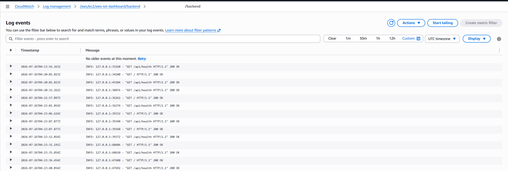
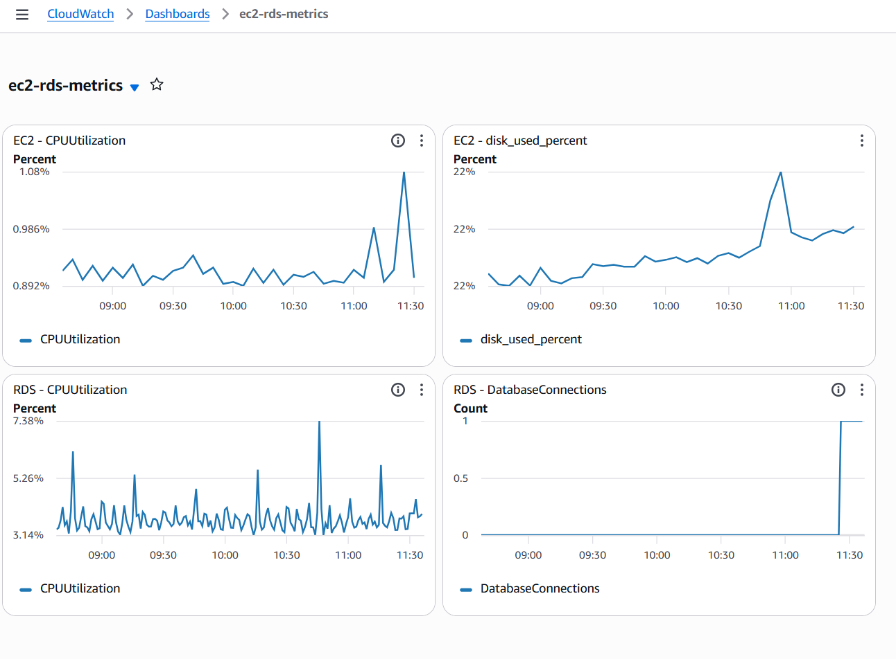
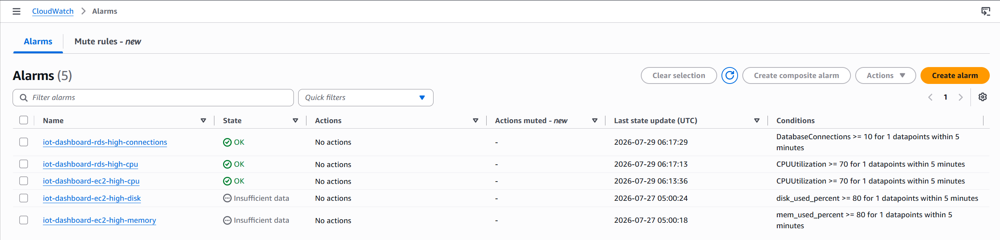

Use native EC2/RDS metrics plus CloudWatch Agent guest metrics and backend logs. The EC2 IAM Role authorizes publishing; the CloudWatch Agent is separate software running on the instance.
| Source | Metric/log | Collection path |
|---|---|---|
| EC2 | CPUUtilization |
Default EC2 metric |
| EC2 guest OS | mem_used_percent |
CloudWatch Agent configuration; Figure 19 does not prove a memory datapoint |
| EC2 guest OS | disk_used_percent |
CloudWatch Agent |
| EC2 guest OS | cpu_usage_idle, cpu_usage_user, cpu_usage_system |
CloudWatch Agent |
| FastAPI | Backend application log | CloudWatch Agent log collection |
| RDS | CPUUtilization |
Default RDS metric |
| RDS | DatabaseConnections |
Default RDS metric |
In the EC2 Console, confirm the instance has the IAM instance profile with the approved CloudWatchAgentServerPolicy. On EC2 Linux Bash, install the amazon-cloudwatch-agent package using the official procedure for the selected distribution, then verify:
sudo systemctl status amazon-cloudwatch-agent --no-pager
ls -l /opt/aws/amazon-cloudwatch-agent/bin/
Do not store AWS access keys in the agent configuration.
Create /opt/aws/amazon-cloudwatch-agent/etc/amazon-cloudwatch-agent.json:
{
"agent": {
"metrics_collection_interval": 60,
"run_as_user": "root"
},
"metrics": {
"namespace": "IoTDashboard/EC2",
"append_dimensions": {
"InstanceId": "${aws:InstanceId}"
},
"metrics_collected": {
"mem": {
"measurement": ["mem_used_percent"]
},
"disk": {
"measurement": ["used_percent"],
"resources": ["/"]
},
"cpu": {
"measurement": ["cpu_usage_idle", "cpu_usage_user", "cpu_usage_system"],
"totalcpu": true
}
}
},
"logs": {
"logs_collected": {
"files": {
"collect_list": [
{
"file_path": "/var/log/aws-iot-backend/backend.log",
"log_group_name": "/aws/ec2/aws-iot-dashboard/backend",
"log_stream_name": "{instance_id}/backend",
"timezone": "UTC"
},
{
"file_path": "/var/log/aws-iot-backend/backend-error.log",
"log_group_name": "/aws/ec2/aws-iot-dashboard/backend-error",
"log_stream_name": "{instance_id}/backend-error",
"timezone": "UTC"
}
]
}
}
}
}
If the active service logs only to journald, either configure the source-defined file logger or use an approved journald collection method; do not point the agent to a nonexistent file.
In EC2 Linux Bash:
sudo /opt/aws/amazon-cloudwatch-agent/bin/amazon-cloudwatch-agent-ctl \
-a fetch-config \
-m ec2 \
-c file:/opt/aws/amazon-cloudwatch-agent/etc/amazon-cloudwatch-agent.json \
-s
sudo systemctl enable amazon-cloudwatch-agent
sudo systemctl status amazon-cloudwatch-agent --no-pager
Check agent diagnostics:
sudo tail -n 100 /opt/aws/amazon-cloudwatch-agent/logs/amazon-cloudwatch-agent.log
/api/health and submit one valid telemetry request./aws/ec2/aws-iot-dashboard/backend and /aws/ec2/aws-iot-dashboard/backend-error.CPUUtilization.CPUUtilization and DatabaseConnections.The captured log stream /aws/ec2/aws-iot-dashboard/backend contains recent FastAPI access events. Requests to /api/health and / returned HTTP 200 OK, which proves that the backend was reachable at the recorded timestamps. This screenshot does not by itself prove every CloudWatch Agent configuration item.

Figure 18. FastAPI backend access logs from EC2 displayed in Amazon CloudWatch Logs, including timestamps, requested endpoints, and HTTP status codes.
The ec2-rds-metrics dashboard contains four visible widgets: EC2 CPUUtilization, EC2 disk_used_percent, RDS CPUUtilization, and RDS DatabaseConnections. The database-connections graph contains a datapoint with value 1 at the time of capture. Figure 19 does not demonstrate a memory datapoint.

Figure 19. The Amazon CloudWatch dashboard displaying EC2 and RDS operational metrics, including CPU utilization, disk usage, and database connections.
The CloudWatch console confirms these five alarm configurations:
| Alarm name | Metric | Condition |
|---|---|---|
iot-dashboard-rds-high-connections |
DatabaseConnections |
≥10 for one datapoint within 5 minutes |
iot-dashboard-rds-high-cpu |
CPUUtilization |
≥70% for one datapoint within 5 minutes |
iot-dashboard-ec2-high-cpu |
CPUUtilization |
≥70% for one datapoint within 5 minutes |
iot-dashboard-ec2-high-disk |
disk_used_percent |
≥80% for one datapoint within 5 minutes |
iot-dashboard-ec2-high-memory |
mem_used_percent |
≥80% for one datapoint within 5 minutes |
Verify the deployed threshold, period, evaluation count, missing-data behavior, and actions instead of assuming that the runbook was applied. The root source README explicitly says SNS is not used; the backend README mentions SNS only as an optional extension, so do not claim an SNS topic/subscription is deployed.

Figure 20. Five CloudWatch Alarms monitoring EC2 and RDS CPU utilization, disk usage, memory usage, and database connections. The OK and Insufficient data states reflect the available metric data at the time of capture.
The disk and memory alarms in the screenshot are in the Insufficient data state. This does not necessarily indicate a configuration failure; it means that insufficient data was available for the selected metric, dimensions, and evaluation period.
The Actions column displays No actions, meaning that no notification action is currently attached. The current version uses alarms to evaluate metric states only. Amazon SNS email or notification integration is a future improvement.
CloudWatch shows recent backend access events, the four EC2/RDS dashboard widgets documented in Figure 19, and five named alarm configurations with explainable states. The evidence proves what is visible without claiming a memory datapoint, an SNS notification, or a second log group that is not shown.
| Symptom | Check |
|---|---|
| Agent inactive | Configuration JSON syntax, service log, package installation |
| Access denied | Attached instance profile and policy; avoid local AWS keys |
| No memory/disk metric | IoTDashboard/EC2 namespace, dimensions, interval, config reload |
| No backend log | Actual log path, read permission, new request, stream timestamp |
| Alarm insufficient data | Metric/dimension/region mismatch or no recent datapoints |
| RDS metric missing | Correct DB identifier, region, and graph time range |
This project does not use AI Operations, GenAI Observability, Application Signals, resource discovery, or observability pipelines.